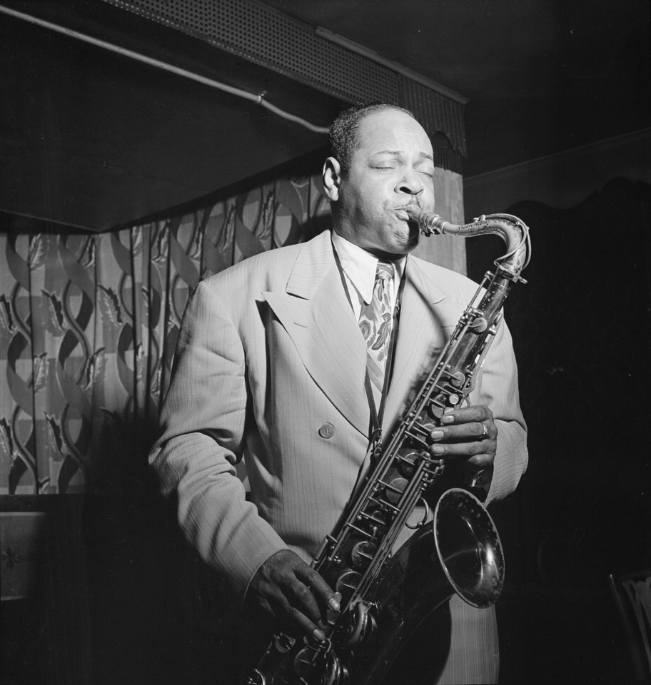
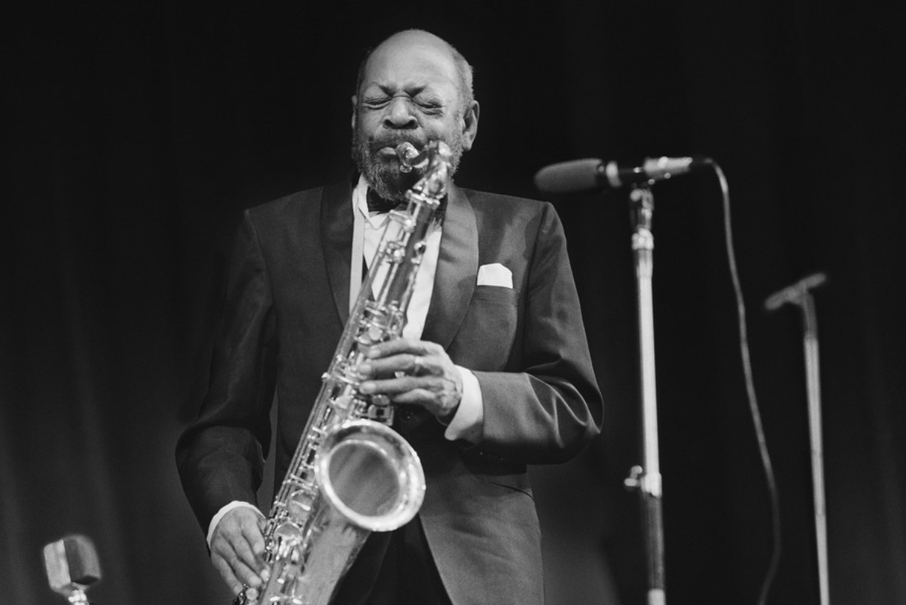
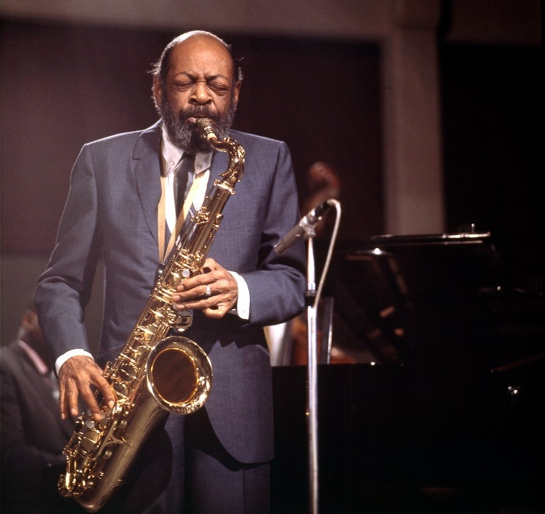

Coleman Hawkings
| Born: | November 21, 1904 |
| Saint Joseph, Missouri, United States | |
| Died: | May 19, 1969 (aged 64) |
| New York, New York, United States | |
| Genres: | Classic Jazz, Swing music, bebop |
| Instruments: | Tenor saxophone, bass saxophone, clarinet |
Biography
Coleman Randolph Hawkins, nicknamed Hawk and sometimes "Bean", was an American jazz tenor saxophonist. One of the first prominent jazz musicians on his instrument, as Joachim E. Berendt explained: "there were some tenor players before him, but the instrument was not an acknowledged jazz horn". While Hawkins is strongly associated with the swing music and big band era, he had a role in the development of bebop in the 1940s.
Early life: 1904–1920
Hawkins was born in Saint Joseph, Missouri, in 1904. Although some sources say 1901, there is no evidence to prove an earlier date; instead, there is record of Hawkins's parents' first child, a girl, being born in 1901 and dying at the age of two, possibly the basis for the mistaken belief. He was named Coleman after his mother Cordelia's maiden name.
He attended high school in Chicago, then in Topeka, Kansas at Topeka High School. He later stated that he studied harmony and composition for two years at Washburn College in Topeka while still attending high school. In his youth he played piano and cello, and started playing saxophone at the age of nine; by the age of fourteen he was playing around eastern Kansas.
1921–1939
Hawkins's first major gig was with Mamie Smith's Jazz Hounds in 1921, and he was with the band full-time from April 1922 to 1923, when he settled in New York City. In the Jazz Hounds, he coincided with Garvin Bushell, Everett Robbins, Bubber Miley and Herb Flemming, among others. Hawkins joined Fletcher Henderson's Orchestra, where he remained until 1934, sometimes doubling on clarinet and bass saxophone. Hawkins's playing changed significantly during Louis Armstrong's tenure with the Henderson Orchestra (1924–25). In the late 1920s, Hawkins also participated in some of the earliest interracial recording sessions with the Mound City Blue Blowers. During his time with Henderson he became a star soloist with increasing prominence on records. While with the band, he and Henry "Red" Allen recorded a series of small group sides for ARC (on their Perfect, Melotone, Romeo, and Oriole labels). Hawkins also recorded a number of solo recordings with either piano or a pick-up band of Henderson's musicians in 1933–34, just prior to his period in Europe. He was also featured on a Benny Goodman session on February 2, 1934 for Columbia, which also featured Mildred Bailey as guest vocalist.
In late 1934, Hawkins accepted an invitation to play with Jack Hylton's orchestra in London, and toured Europe as a soloist until 1939, performing and recording with Django Reinhardt and Benny Carter in Paris in 1937. Following his return to the United States, on October 11, 1939, he recorded a two-chorus performance of the pop standard "Body and Soul", which he had been performing at Bert Kelly's New York venue, Kelly's Stables. In a landmark recording of the swing era, captured as an afterthought at the session, Hawkins ignores almost all of the melody, with only the first four bars stated in a recognizable fashion. In its exploration of harmonic structure it is considered by many to be the next evolutionary step in jazz recording after Louis Armstrong's "West End Blues" in 1928.
Hawkins' time touring Europe between 1934 and 1939 allowed many other tenor saxophonists to establish themselves back in the U.S., including Lester Young, Ben Webster, and Chu Berry.
The 1940's and 1950's
After an unsuccessful attempt to establish a big band, he led a combo at Kelly's Stables on Manhattan's 52nd Street with Thelonious Monk, Oscar Pettiford, Miles Davis, and Max Roach as sidemen. Hawkins always had a keen ear for new talent and styles, and he was the leader on what is generally considered to have been the first ever bebop recording session in 1944 with Dizzy Gillespie, Pettiford and Roach. Later he toured with Howard McGhee and recorded with J. J. Johnson and Fats Navarro. He also toured with Jazz at the Philharmonic.
After 1948 Hawkins divided his time between New York and Europe, making numerous freelance recordings. In 1948 Hawkins recorded "Picasso", an early piece for unaccompanied saxophone.
Hawkins directly influenced many bebop performers, and later in his career, recorded or performed with such adventurous musicians as Sonny Rollins, who considered him as his main influence, and John Coltrane. He appears on the Thelonious Monk with John Coltrane (Jazzland/Riverside) record. In 1960 he recorded on Roach's We Insist! suite.
Later life
In the 1950s, Hawkins performed with more traditional musicians such as Red Allen and Roy Eldridge, with whom he appeared at the 1957 Newport Jazz Festival and recorded Coleman Hawkins Encounters Ben Webster with fellow tenor saxophonist Ben Webster along with Oscar Peterson (piano), Herb Ellis (guitar), Ray Brown (bass), and Alvin Stoller (drums). In the 1960s, he appeared regularly at the Village Vanguard in Manhattan.
Meanwhile, Hawkins had begun to drink heavily and his recording output began to wane. However, he did record for the Impulse! label for a time, a period which includes the album Duke Ellington Meets Coleman Hawkins. His last recording was in 1967.
With failing health, Hawkins succumbed to liver disease in 1969 and is interred in the Yew Plot at the Woodlawn Cemetery in The Bronx, New York City.
The Song of the Hawk, a 1990 biography written by British jazz historian John Chilton, chronicles Hawkins's career as one of the most significant jazz performers of the 20th century.